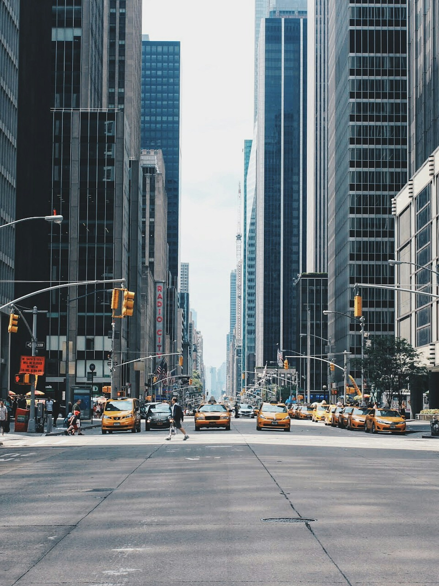

slit

Just the essentials.
CAPTURE STUDY
- Camera
- Standard main · 1×
- Capture
- Stills only
- Focus
- Tap or hold to lock
- Exposure
- Automatic + compensation
This study uses a sample photograph. Focus, exposure, and saving are simulated. Your camera is never opened.
Keyboard: Space takes a photograph when the camera is active. L locks focus on the viewfinder. Escape closes a panel.
Review
Swipe to browse
SIMULATED CAPTURE
The moment stays yours.
This is the sample image with your exposure setting. No original file was captured or saved.